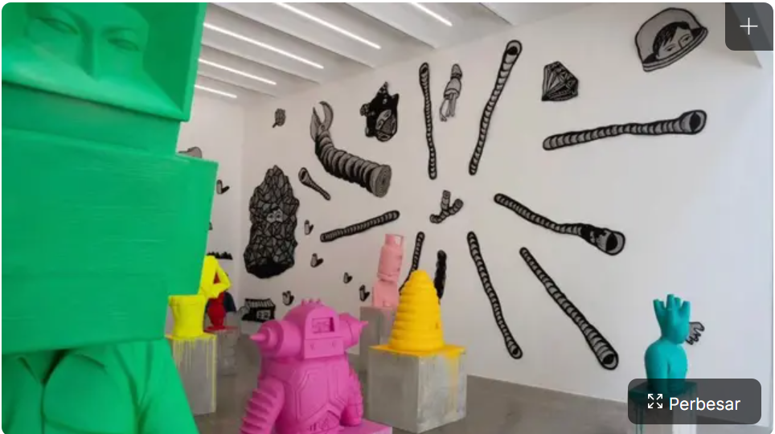

BLOG
Article :
Xiaomi 14 resmi diboyong ke Indonesia seharga Rp11,9 jutaan
Xiaomi Indonesia secara resmi meluncurkan produk andalannya ke Indonesia di 2024 yaitu Xiaomi 14 yang membawa keunggulan lensa optik Leica Summilux dengan hasil fotografi kelas atas seharga Rp 11,9 jutaan.
"Ya inilah Xiaomi 14 yang legendaris, akhirnya kami bawa kembali produk flagship Xiaomi ke Indonesia," kata Country Director Xiaomi Indonesia Wentao Zhao dalam perilisan Xiaomi 14 di Jakarta, Selasa.
Mengunggulkan kameranya, Xiaomi 14 hadir dengan konfigurasi triple camera yang memberikan pengalaman fotografi lengkap mencakup focal length yang luas mulai dari 14mm hingga 75mm.
Xiaomi 14 dirancang dengan lensa optik Leica Summilux dengan aperture ƒ/1.6 yang ditingkatkan pada kamera utama yang berukuran 50 MP, dikombinasikan dengan sensor gambar Light Fusion 900 dan mengoptimalkan dynamic range hingga 13,5 EV
Baca Selengkapnya
Galeri Seni Makin Membuka Diri pada Generasi Masa Kini

Galeri seni menjadi wadah ruang pamer bagi para seniman untuk menyampaikan pesannya ke audiens. Belakangan, galeri seni tak lagi melulu tampil konvensional tapi merangkul generasi baru untuk melek soal seni lewat pameran yang menarik.
Bicara galeri seni masa kini, maka Anda akan melihat sisi interaktif dan berpadu dengan teknologi yang seolah ingin mengajak anak muda agar tertarik dengan seni. Kebanyakan galeri seni saat ini juga menggelar program dengan kelas workshop dan dipadukan dengan kegiatan sastra maupun seni pertunjukan. "Mulai dengan rasa senang dulu, mereka foto-foto di depan karya, mengapresiasi dan itu berproses karena orang tidak selalu harus serta-merta paham mengerti apa yang ditampilkan," ungkap Anggota Dewan Kurator Salihara Art Centre, Asikin Hasan dalam wawancara telepon dengan Liputan6.com, Kamis, 23 November 2023.
Baca Selengkapnya
Menolak Pindah, Vitor Roque Siap Bersinar di Barcelona
Rumor Vitor Roque akan cabut dari Barcelona di musim panas nanti nampaknya tidak akan jadi kenyataan. Sang striker disebut akan tetap bertahan di Barcelona pada musim panas nanti.
Roque sudah resmi menjadi pemain Barcelona. Ia telah merampungkan kepindahannya dari Athletico Paranaense di awal tahun 2024 kemarin.
Namun sejauh ini Roque masih kesulitan untuk bermain reguler di skuat Barcelona. Alhasil beredar rumor bahwa Roque akan pindah ke klub lain dengan status pemain pinjaman di musim 2024/2025 nanti.
Namun agen Roque membantah kliennya akan pindah dari Camp Nou di musim panas nanti. "Vitor sangat bahagia di Barca saat ini," buka sang agen kepada Que T'hi Jugues.
Baca Selengkapnya